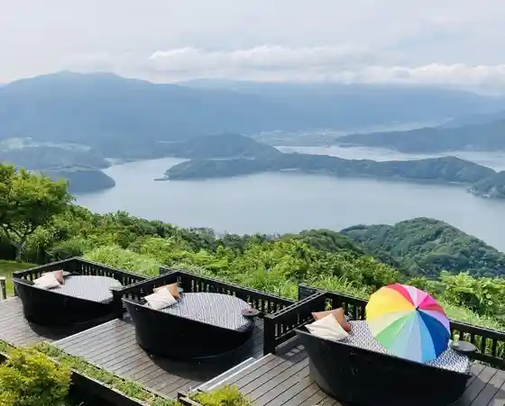

Reimbo Line Sancho Park Mikata Go Mizumi Ni Uka Bu Tenku no Terasu
Fukuimihama, Fukui · 0770-47-1170 · Official / source link

Mikata Go Mizumi
Fukuimihama, Fukui · 0770-32-0222 · Official / source link
Suisho Hama Beach
Fukuimihama, Fukui · 0770-32-0222 · Official / source link
Fisshingu Land Hyuga
Fukuimihama, Fukui · 0770-45-2929 · Official / source link
Shii Park Tanjo
Fukuimihama, Fukui · 0770-39-1900 · Official / source link
Hiruga Kaijo Tsuribori
Fukuimihama, Fukui · 0770-32-1146 · Official / source link
Daiya Hama Beach
Fukuimihama, Fukui · 0770-32-0222 · Official / source link
Roadside Station (Wakasa Fukuimihama Hamabiyori)
Fukuimihama, Fukui · Official / source link
Shinjo Keiryu Village
Fukuimihama, Fukui · 0770-32-5580 · Official / source link
Rentasaikuru - Fukuimihama − Wakasa Fukuimihama Tourism Association (JR Fukuimihama Ekinai)
Fukuimihama, Fukui · 0770-32-0222 · Official / source link
Fukuiken Engei Taiken Shisetsu Engei LABO no Oka
Fukuimihama, Fukui · 0770-47-6162 · Official / source link
Fukuimihama Genshiryoku PR Center
Fukuimihama, Fukui · 0770-39-1210 · Official / source link
Tanjo Shirahama Campground
Fukuimihama, Fukui · 0770-39-1241 · Official / source link
Fisshingureimbo
Fukuimihama, Fukui · 0770-45-2841 · Official / source link
Fukuimihama Enerugii Kankyo Kyoiku Taiken Kan Kiipasu
Fukuimihama, Fukui · 0770-39-1116 · Official / source link
Zuirin Tera no Ippon Sakura
Fukuimihama, Fukui · Official / source link
Kyuju Hyakusen
Fukuimihama, Fukui · 0770-32-3339 · Official / source link
Hisabisa Ko Beach
Fukuimihama, Fukui · 0770-32-0222 · Official / source link
Tanjo Oto Campground
Fukuimihama, Fukui · 0770-39-1241 · Official / source link
Hayase Beach
Fukuimihama, Fukui · 0770-32-0222 · Official / source link
Takenami Beach
Fukuimihama, Fukui · 0770-32-0222 · Official / source link
Sugahama Beach
Fukuimihama, Fukui · 0770-32-0222 · Official / source link
Tanjo Shirahama Beach
Fukuimihama, Fukui · 0770-32-0222 · Official / source link
Fukuimihama Hatofuru Asa City Oishii Nature, Hatofuru Fukuimihama
Fukuimihama, Fukui · 0770-32-6706 · Official / source link
Suisei Tera
Fukuimihama, Fukui · Official / source link
Jun Hanshi Yashikiato
Fukuimihama, Fukui · Official / source link
Wakasa Kuniyoshi Shiro History Museum
Fukuimihama, Fukui · 0770-32-0050 · Official / source link
Byobugataki
Fukuimihama, Fukui · 0770-32-0222 · Official / source link
Fukuimihama Rekishi Bunka Kan
Fukuimihama, Fukui · 0770-32-0027 · Official / source link
Fukuimihama Town Hall
Fukuimihama, Fukui · 0770-32-1111 · Official / source link